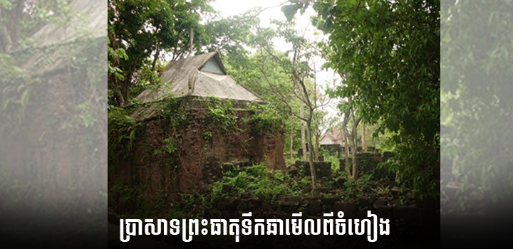
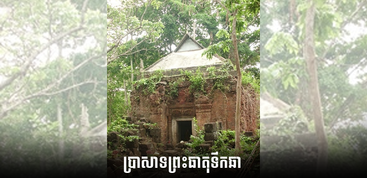
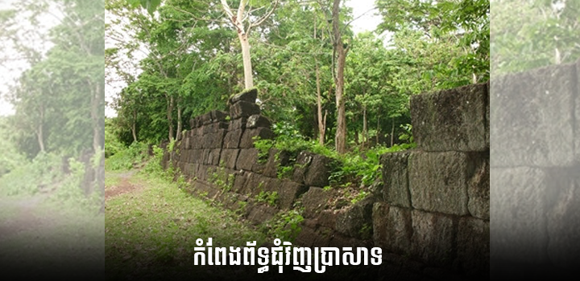
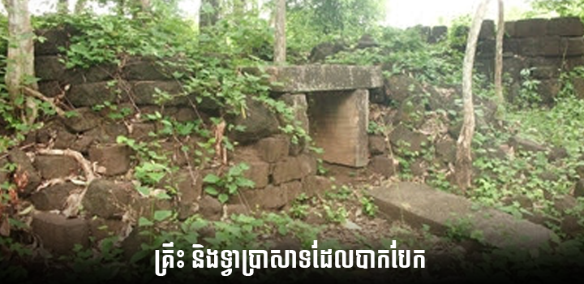
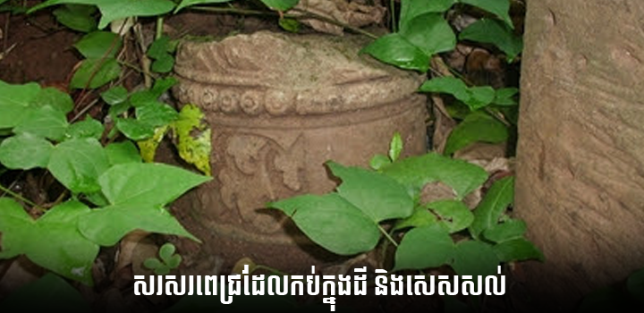

ប្រាសាទព្រះធាតុទឹកឆា
ប្រាសាទព្រះធាតុទឹកឆាមានទីតាំងស្ថិតនៅភូមិថ្មដា ឃុំបឹងណាយ និងភូមិថ្មី ឃុំក្រូច ស្រុកព្រៃឈរ មានចម្ងាយ៣៩គ.ម ពីទីរួមខេត្តកំពង់ចាម ចូលពីផ្លូវជាតិ១៣គ.ម ត្រង់ភូមិក្រូច ត្រូវបែក ចេញពីផ្លូវខេត្តបត់ទៅស្តាំតាមផ្លូវសសៀរបណ្តោយប្រឡាយទឹក៥គ.ម ទើបដល់ប្រាសាទព្រះធាតុ ទឹកឆានេះ។ ប្រាសាទព្រះធាតុទឹកឆា កសាងឡើងក្នុងគ.ស ១០០៥ ក្នុងរជ្ជកាលព្រះបាទសូរ្យវរ្ម័នទី១។ ការកសាងប្រាសាទនេះគឺរៀបចំដោយលោក ជង្ឃាល «ជាក់ងាក់ ឃាលៈ» ឬបណ្ឌិតលក្សិន្ទ្រ ដែល កន្លែងនោះហៅថាសិទ្ធិបុរ្យ។ នៅទីនោះមានប្រាសាទធំមួយដែលតម្កល់រូបលិង្គនៅចំកណ្តាល មាន ឈ្មោះថា ស្រីកទ្រេស្វរៈ និងទេវរូបពីរអមសងខាងដែលមួយមានឈ្មោះថា បរមេស្វរៈ និងមួយទៀត ឈ្មោះសរស្វតិ និងចំពីមុខមានគុហារមួយទៀតជាទេវស្ថានដែលមានទំហំតូច។
នៅក្នុងរមណីដ្ឋានព្រះធាតុទឹកឆា មានប្រាសាទតូចៗរហូតដល់៥៥១ ប្រាសាទទាំងនោះជា ប្រាសាទបែបពុទ្ធសាសនា និងព្រហ្មសាសនាផង។ ព្រះបាទសូរ្យវរ្ម័នទី១ ព្រះអង្គទ្រង់ប្រោសព្រះរាជា នុញ្ញាតិតាមការស្នើសុំ ព្រមទាំងប្រទាននូវទ្រព្យសម្បត្តិជាច្រើនទៀតដើម្បីជាមធ្យោបាយក្នុងការ កសាងនេះផង។ បណ្ឌិតជង្ឃាល ឬលក្សីន្ទ្របណ្ឌិត ចាប់ផ្តើមធ្វើកិច្ចការស្ថាបនានេះឡើងតាមកម្លាំង ព្រះរាជទ្រព្យ និងតាមប្រាជ្ញារបស់លោកក្នុងការបញ្ចុះបញ្ចូលរកជំនួយអំពីអ្នកស្រុក លុះត្រាតែបានរួច ស្រេចតាមគម្រោងដែលដាក់ថ្វាយព្រះរាជា។
នៅក្នុងប្រាសាទធំមានតំកល់រូបសិវលិង្គចំកណ្តាលសន្មតនាមថា ស្រីភទ្រេស្វរៈ និងទេវរូបពីរ អមសងខាងមួយមាននាមថា បរមេស្វរៈ មួយទៀតនាមសរស្វតិ។ នៅចំពីមុខទិសខាងកើតមានគុហារ មួយទៀតជាទេវស្ថាន មានទំហំតូចដែលសព្វថ្ងៃគេឃើញថ្មឆ្លាក់គរជាគំនរ កប់ក្នុងព្រៃក្បែរប្រឡាយ ទឹកជ្រោះមានតែស៊ុមទ្វារមួយនៅសល់គ្រាន់ជាការបង្ហាញហេតុតែប៉ុណ្ណោះ។
ស្ថាបត្យករបានចាត់ការជីកស្រះមួយយ៉ាងធំទូលាយ នៅចំហៀងខាងស្តាំប្រាសាទឲ្យឈ្មោះថា លក្សិន្រ្ទដាក ហើយប្រតិស្ថានលិង្គមាសមួយតំកល់នៅកណ្តាលស្រះផង។ នៅជុំវិញបរិវេណនេះ មានការរៀបចំជាស្រុកភូមិមួយយ៉ាងស្តុកស្តម្ភ ដោយប្រមូលអ្នកស្រុកជិតខាង ឲ្យមកនៅជួបជុំគ្នា ក្នុងសម័យនោះ ដូច្នេះបរិយាកាសក្រុងថ្មីនេះក៏មានសភាពកាន់តែអិកធិកឡើង។
ក្រោយពីការរៀបចំរួចហើយលក្សិន្រ្ទបណ្ឌិត បាននាំយកព័ត៌មាននោះទៅក្រាបបង្គំទូល ព្រះបាទសូរ្យវរ្ម័ន ព្រះអង្គទ្រង់យាងប្រារព្ធពិធីសម្ពោធទីកន្លែងនេះដ៏មហោឡារិកនៅក្នុងគ.ស១០២៥។ ក្នុងពិធីសម្ពោធនោះ ព្រះរាជាទ្រង់បានប្រទាននូវធនធានជា ប្រដាប់ប្រើប្រាស់មានពួកពលព្រះ ២៩នាក់ ដីស្រែនៅជុំវិញបា្រសាទ និងស្រះទឹកទាំងអស់ព្រមទាំងទីលានធំៗសម្រាប់ប្រកបពិធី ឬ ជាគ្រឿងលំអរទុកជាទ្រព្យផ្ទាល់នៃព្រះគុហារនេះផង។ មិនតែប៉ុណ្ណោះព្រះអង្គបានព្រះរាជទាននាម ទីកន្លែងនេះថា លក្សិន្រ្ទបថ ដោយនិយមតាមនាមបណ្ឌិតជាអ្នកកសាង។
លុះចំណេរក្រោយមកទៀត ដោយសារការផ្លាស់ប្តូរនៃរបត់ប្រវត្តិសាស្រ្តកន្លែងនេះបាន ក្លាយ ទៅជាកន្លែងសម្រាប់បូជាខាងសាសនា ដោយសារតែពីរជ្ជកាលស្តេចមួយអង្គទៅមួយអង្គទ្រង់កាន់ សាសនាផ្សេងៗគ្នា។ ព្រះមហាក្សត្រអង្គខ្លះកាន់ព្រាហ្មសាសនា ព្រះមហាក្សត្រអង្គខ្លះទៀត កាន់ព្រះពុទ្ធសាសនាហិនយាន និងអង្គខ្លះទៀតកាន់ពុទ្ធសាសនាមហាយាន ទើបនៅតំបន់ប្រាសាទ ព្រះធាតុទឹកឆានេះមានប្រាសាទតូៗរហូតដល់៥៥១ប្រាសាទ ដែលមានទាំងពុទ្ធសាសនា និងព្រាហ្ម សាសនាផង ព្រមទាំងប្រាសាទសម្រាប់តំកល់រូបសំណាកវិរៈបុរសដែលបានបូជា សាច់ឈាម ជូនជាតិទៀតផង។
សង្គ្រាមបានបំផ្លាញអ្វីៗទាំងអស់ ធ្វើឲ្យប្រាសាទមួយចំនួនត្រូវបានបាក់បែកខ្ទេចខ្ទី ប្រាសាទ ខ្លះត្រូវបានបាត់បង់ឈ្មោះ រូបរាង និងឈ្មោះទៀតផង។
បច្ចុប្បន្ននេះ ដោយមានការចូលរួមពីពុទ្ធបរិស័ទជិតឆ្ងាយ និងព្រះសង្ឃក្នុងវត្តបានខិតខំស្រាវ ជ្រាវរកទីកន្លែងឈ្មោះ និងទីកន្លែងគ្រឹះប្រាសាទចាស់ដើម្បីកសាងប្រាសាទនោះវិញ។ ប្រាសាទដែល មានពុទ្ធបរិស័ទកសាងនោះធ្វើឡើងពីឈើប្រក់ក្បឿង ខ្លះទៀតធ្វើពីបេតុងតាមកន្លែងដែលធ្លាប់មាន តាំងពីដើមមក។
